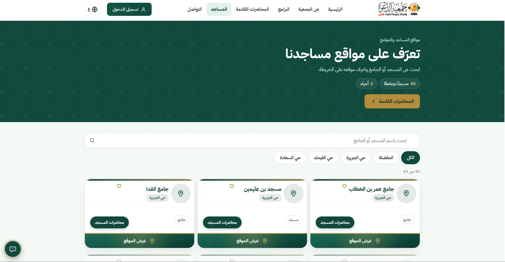

جمعية الدعوة والإرشاد بالسليمنصة سحابية حية
منصة «منار» للبرامج الدعوية وإدارة المساجد والمحاضرات
المؤسس · مهندس المنظومة · المبرمج ومصمم الجرافيك
منظومة سحابية متكاملة على Cloudflare Workers حوّلت تنسيق المحاضرات والملتقيات في أكثر من 40 مسجدًا وجامعًا إلى بوابة رقمية ذكية تمنع تعارض المواعيد تلقائيًا، وتوفر خرائط تفاعلية للمساجد وتصديرًا فوريًا للجداول بصيغة PDF.
إعلانات المحاضرات والملتقيات: كافة التصاميم الإعلانية الرسمية لجمعية السلي منشورة مباشرة داخل منصة منار.
الدخول إلى منصة منار الحية
sulay-platform1.yazeedelyas990.workers.dev



اضغط للتبديل بين اللقطات